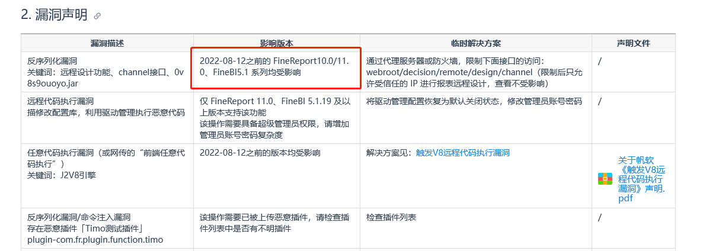
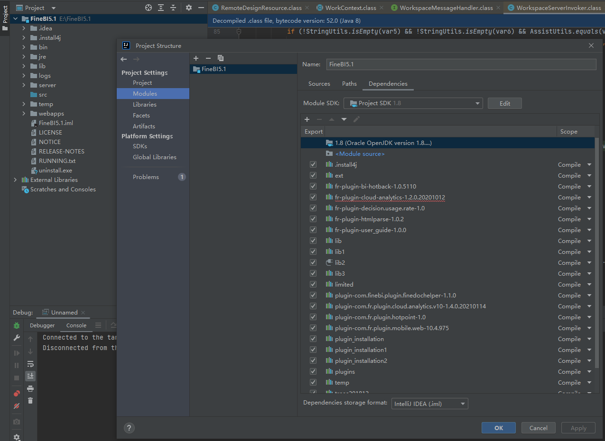
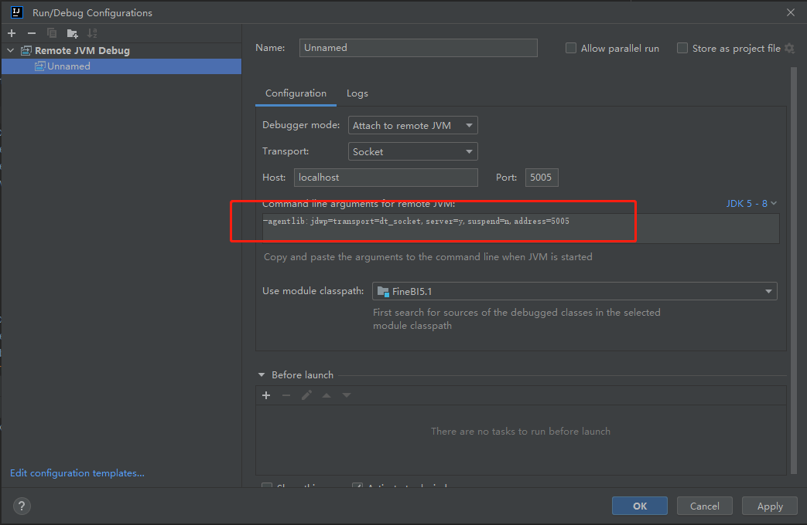
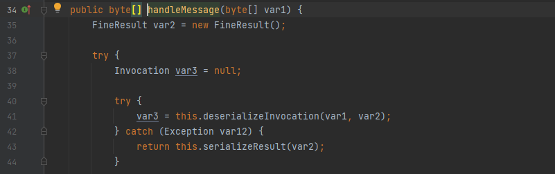
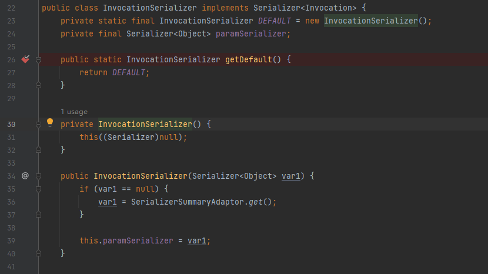
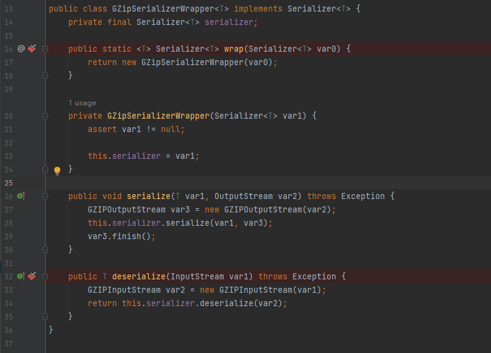
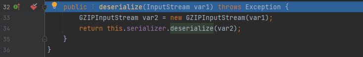
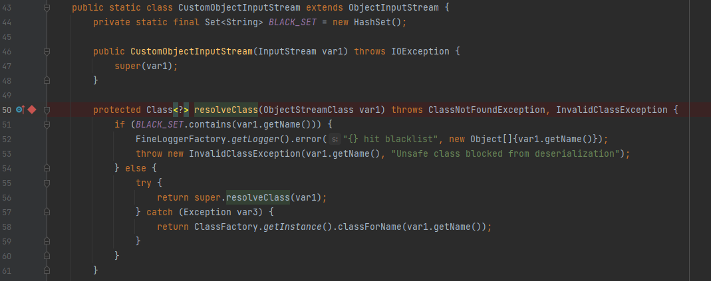

帆软反序列化RCE漏洞分析_V20220812
本文仅用于技术讨论与研究，文中的实现方法切勿应用在任何违法场景。如因涉嫌违法造成的一切不良影响，本文作者概不负责。
0x00 前言
朋友发给我一起看看的洞，我也搞 JAVA 的系统搞得少，一起看了下，成功复现，在这里记录一下。
0x01 漏洞简介
帆软官网通告： https://help.fanruan.com/finereport/doc-view-4833.html

0x02 漏洞影响
影响 2022-08-12 之前的 FineReport10.0/11.0 、FineBI5.1 系列
经测试 FineBI5.1.10 可以成功，FineBI5.1.18 无法成功，下载到的最新版 FineReport10.0 也无法成功，但历史版本应该可以成功。
0x03 环境搭建
安装包下载
本文使用的环境是 FineBI5.1.10
官网可以下载到安装包：https://www.finebi.com/product/download
注册一个账号即可获取免费注册码
调试环境搭建
安装完后，IDEA 直接打开整个项目，一股脑导入所有的 jar 包

接下来设置调试选项

复制红框中的参数，然后打开 E:\FineBI5.1\bin\finebi.vmoptions ，并将该参数插入到最后一行，重启 FineBI.exe ，IDEA 打开 debug 即可开始调试。
0x04 漏洞分析
根据漏洞通告，直接找到 webroot/decision/remote/design/channel 接口所在的包，位置如下：
1 | |

此处将所有的输入都放入 WorkContext.handleMessage ，跟进后如下
1 | |

继续跟进 messageListener.handleMessage
1 | |

这里就能看到与反序列化有关的 this.deserializeInvocation ，参数 var1 是我们的输入，var2 用来存放结果

看到这一句
1 | |
这里涉及到三个类的处理，依次来看，我们首先看到 InvocationSerializer.getDefault()
1 | |

这里直接返回 DEFAULT ，是在 23 行定义的常量，直接是获取实例化的 InvocationSerializer() ，可以直接看构造函数，最后执行的是 SerializerSummaryAdaptor.get()
获取完后直接将得到的值或对象赋值给 this.paramSerializer ，但是这个变量在后面反序列化执行中并不涉及，因此就不细讲了。
因此我们此处获取的是 InvocationSerializer() 的实例化对象，之后传入 GZipSerializerWrapper.wrap() 进行封装，看代码
1 | |

这里直接返回 GZipSerializerWrapper(var0) 实例化对象，然后是将传进来的 var1 也就是前面提到的 InvocationSerializer() 实例化对象赋值给 this.serializer
好了，接下来执行 SerializerHelper.deserialize()
1 | |

这时候的 var1 已经处理过，不再是 null ，可以跳过 if 语句，然后使用 ByteArrayInputStream 将字节数组转换为输入流，最后进行反序列化，调用首先调用 GZipSerializerWrapper 的 deserialize 函数

注意到这里的 deserialize 方法，反序列化时，会先将传入的值进行 gzip 解压，然后再反序列化，这点一定得牢记。
然后调用 this.serializer 的 deserialize，前面讲过 this.serializer 是实例化的 InvocationSerializer() ，因此调用 InvocationSerializer() 的 deserialize

这里就调用了 JDKSerializer.CustomObjectInputStream(var1) ，看到代码
1 | |

这个 CustomObjectInputStream 类继承了 ObjectInputStream ，最后调用 readObject 方法进行反序列化，由于内容可控，因此造成了反序列化漏洞。
0x05 漏洞复现
这里可以利用 CB 链的不使用 common-connections 版本进行攻击，直接借助 su18 大佬的 ysuserial 工具生成 payload ，选中的链子是 CommonsBeanutils1183NOCC
简单写个 exp 提交数据
这个 exp 参考的大佬的，链接在最下方有，在他的基础上，增加了 gzip 压缩，以及删除了 headers ，这个 headers 在此处可以使用，但是在 FineBI5.1.18 或者 FineReport10.0.19 会导致数据无法 POST 成功（这里让我调了挺久，最后通过 wireshark 抓包才查出来问题）
1 | |

0x06 修复
FineBI5.1.10 成功后，我又去看了 FineBI5.1.18 ，利用没有成功。我这里使用 FineReport10.0 ，代码几乎一致
FineReport10.0 的代码中存在这样一段，对反序列化的数据进行了黑名单过滤
1 | |

黑名单位置
1 | |